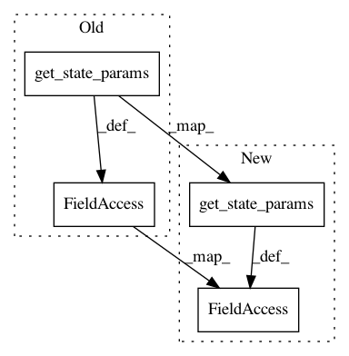

cb6a68195088f0b7d4fe1a186d72fc8aac84b89f,catalyst/core/runner.py,_Runner,_prepare_for_stage,#_Runner#Any#,154
Before Change
def _prepare_for_stage(self, stage: str):
utils.set_global_seed(self.experiment.initial_seed)
migrating_params = {}
stage_state_params = self.experiment.get_state_params(stage)
migrate_from_previous_stage = \
stage_state_params.get("migrate_from_previous_stage", True)
if self.state is not None and migrate_from_previous_stage:
migrating_params.update(
{
"step": self.state.step,
"epoch": self.state.epoch
}
)
utils.set_global_seed(self.experiment.initial_seed)
self.model, criterion, optimizer, scheduler, self.device = \
self._get_experiment_components(stage)
utils.set_global_seed(self.experiment.initial_seed)
self.state = self.state_fn(
stage=stage,
model=self.model,
device=self.device,
After Change
def _prepare_for_stage(self, stage: str):
utils.set_global_seed(self.experiment.initial_seed)
migrating_params = dict(**self.experiment.get_state_params(stage))
migrate_from_previous_stage = \
migrating_params.get("migrate_from_previous_stage", True)
if self.state is not None and migrate_from_previous_stage:
migrating_params.update(
{
"step": self.state.step,
"epoch": self.state.epoch,
"resume": getattr(self.state, "resume", None),
}
)
utils.set_global_seed(self.experiment.initial_seed)
self.model, criterion, optimizer, scheduler, self.device = \
self._get_experiment_components(stage)
utils.set_global_seed(self.experiment.initial_seed)
self.state = self.state_fn(
stage=stage,
model=self.model,
device=self.device,
In pattern: SUPERPATTERN
Frequency: 4
Non-data size: 4
Instances
Project Name: catalyst-team/catalyst
Commit Name: cb6a68195088f0b7d4fe1a186d72fc8aac84b89f
Time: 2020-02-13
Author: andrey.sheka@gmail.com
File Name: catalyst/core/runner.py
Class Name: _Runner
Method Name: _prepare_for_stage
Project Name: catalyst-team/catalyst
Commit Name: 1f2a21411601c92234bc4d11d59eb5a577fe1ecd
Time: 2020-02-12
Author: andrey.zharkov@phystech.edu
File Name: catalyst/core/runner.py
Class Name: _Runner
Method Name: _prepare_for_stage